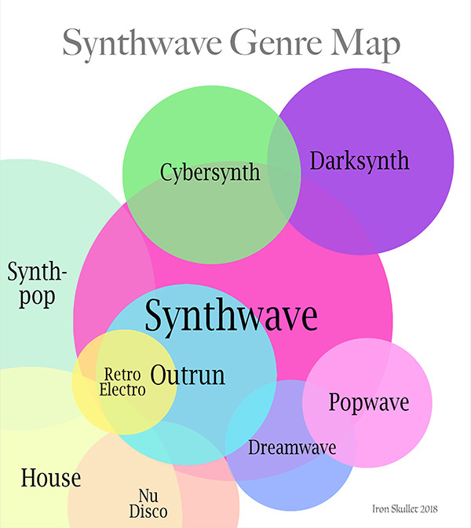
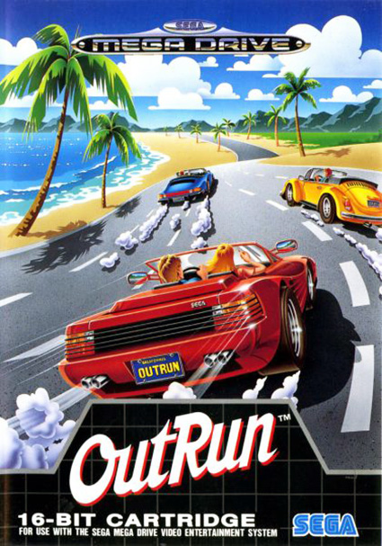
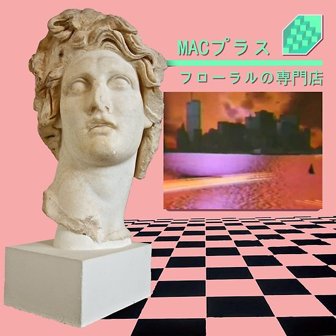

Synthwave is an electronic music microgenre that is based predominately on the music associated with
action, science-fiction, and horror film soundtracks of the 1980s. Other influences are drawn from that
decade's art and video games. Synthwave musicians often espouse nostalgia for 1980s culture and attempt to
capture the era's atmosphere and celebrate it. The genre developed in the mid 2000s through French house
producers, as well as younger artists who were inspired by the 2002 video game Grand Theft Auto: Vice City.
Synthwave reached wider popularity after being featured in the soundtracks of the 2011 film Drive and the
2010s Netflix series Stranger Things. In the formative days of synthwave, “outrun” and “outrun electro” were
the most common names for the
genre, with “synthwave” overtaking them in popularity roughly around 2014. As the genre continues to expand,
“outrun” remains a useful term for describing the specific music style established on the earliest synthwave
releases.
The difference between...
The terms “synthwave” and “retrowave” are the modern names for the genre, and they are used broadly when
talking about the music. 
The two terms are roughly
equivalent, though synthwave is the more common term
when talking about the music. In general, “synthwave” refers specifically to the music, while “retrowave”
is an all-encompassing term that also applies to artwork, clothing, videos, and other media that embody
‘80s nostalgia and ‘80s retrofuturism. Notably, NewRetroWave is not a name for the genre; it is a
prominent record label and synthwave promoter that focuses on new retrowave content.

Culture
Musically, synthwave’s origins are tied to dance genres of the mid ‘00s, specifically house and nu
disco. Early synthwave artists put a retro-synth spin on these sounds while borrowing inspiration from
‘80s
Euro disco, funk, and electro, as well as soundtracks for movies, television, and video games. Smaller
elements like ‘80s jingles for television commercials, VHS production companies, and nightly news programs
also played a role in the genre’s genesis.
Want to learn even more? Click these icons!

Visual aesthetic
Music and visual art go hand in hand. With the advent of Vaporwave music emerged a visual aesthetic with an
ambiguous or satirical take on consumer capitalism and popular culture. It is characterized by nostalgia and
surrealist engagement with the popular entertainment, technology and advertising of previous decades-
particularly the late 80's through 9/11. The term 'Vaporwave' can refer to the form of music or the visual
aesthetic. Vaporwave as a visual aesthetic refers to imagery used to accompany the musical genre which
evokes a sense
of nostalgia for a time which may not have actually existed.
More Music
Synthwave’s name can be misleading, as the music has very little in common with new wave, which is a
rock-based genre that evolved out of punk acts of the ‘70s and flourished in Britain and North America in
the ‘80s. Similarly, synthwave is not a new or synonymous name for synthpop, which is a much older and very
different style of music. Generally speaking, there’s little overlap between the synthwave and synthpop
genres. Instead, synthwave is rooted much more deeply in European disco and electronic dance music.